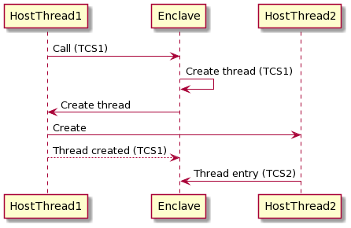
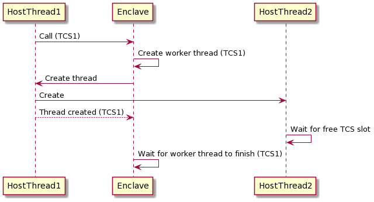

Using threads in enclaves¶
Writing thread safe enclaves¶
Writing a thread safe enclave is no different to writing any other thread safe code in Java, with one exception.
Whilst all the same concurrency tools and utilities are available, you must opt-in to multi-threading. If you
don't then all threads that enter the enclave will synchronize on the enclave object lock and execute serially. To opt in,
override the getThreadSafe method and return true.
This is a safety mechanism. It would be easy to write an enclave that isn't thread safe without thinking about it,
perhaps because the additional performance isn't important. That would be hard to notice as anyone reading the code
would be looking for the absence of something rather than its presence. The host could then multi-thread the enclave
without it being prepared for that and corrupt your application-level data structures in ways that might be exploitable.
When you return true from getThreadSafe you're asserting to Conclave that you've taken care to ensure your
receiveFromUntrustedHost and receiveMail methods can handle concurrent execution, so it's safe for Conclave to stop
locking the enclave itself. By requiring an opt-in it becomes visible to other developers and code reviewers, thus
reminding them that the code needs to be thread safe.
The enclave current context¶
When your code is running inside an enclave the CPU maintains a lot of state about your code and potentially your private data. This information is all securely contained within the boundary of the SGX enclave: Code outside the enclave cannot peek into the enclave CPU state to try to see these secrets.
This state information along with other private information such as the current stack contents is called the current context.
Now, when a host application calls into an enclave, the host itself has a current context. We could feasibly use the host current context within the enclave as the host isn't hiding secrets from the enclave. However, when we are inside the enclave we may potentially put some secret information into the context structures which we don't want the host to know. When the enclave returns back to the host, how do we make sure that the current context does not contain any enclave secrets?
Intel SGX solves this by maintaining a different version of the current context inside the enclave to the context outside the enclave. Whenever you make a call from the host to the enclave the host context is saved, and the context switches to an in-enclave current context that only the enclave can see. When the enclave exits back to the host, the enclave current context is saved in encrypted memory that only the enclave can see, and the host context is restored. Thus the secrets inside the enclave remain safe.
Thread Control Structure and threads¶
SGX stores the in-enclave current context in a Thread Control Structure (TCS) and related information in a Save State Area (SSA). These live in a portion of EPC memory which is the encrypted memory that only that exact instance of the enclave can access. When an enclave is first loaded, the SGX platform reserves encrypted memory for the enclave, including any space required for TCS's that will be used by the enclave. This forms part of the memory layout of the enclave that is fixed during the build of the enclave and signed so it cannot be modified once deployed.
So, what if you want to execute multiple threads simultaneously inside the enclave? Each time the host calls into the enclave the CPU needs to switch the current context from the host to the enclave context. Therefore there must be enough TCS slots available in EPC memory to store the number of threads that will simultaneously be running inside the enclave. If the enclave runs out of slots then it will not allow the thread to enter the enclave.
As mentioned above, the TCS slots form part of the signed memory layout and cannot be dynamically changed, therefore the number of TCS slots available to an enclave needs to be selected carefully by the developer using Conclave configuration. The setting is dependent on the requirements of the host/enclave with regards to threading.
Why not just set an arbitrarily large value for the number of TCS slots? This is possible but you have to remember that each TCS, along with the related SSA and stack space takes an amount of EPC. In current generations of SGX hardware, EPC can be very limited. You don't want to use it all up on slots that may not be required.
Tip
Future SGX hardware will have the ability to dynamically create new threads, removing the limitation with fixed TCS slots. Conclave will be updated to support this when the hardware is available.
How Conclave manages threads¶
Conclave attempts to hide many of the complexities that arise due to the fixed number of TCS slots available at enclave runtime. It does this by arbitrating between threads that are contending for the limited TCS slots.
Whenever the host calls into the enclave, a TCS slot is consumed. When the thread exits the enclave Conclave releases that TCS back to the pool allowing another thread to consume it. Conclave does not require the context to be maintained between external calls to the enclave.
If the host attempts to call into the enclave when no TCS slots are available then the host thread is blocked until another thread exits the enclave and a TCS slot is freed.
So, for example, this host code is perfectly acceptable to run on an enclave with 10 TCS slots:
1 2 3 4 5 6 7 | |
The code above will create 100 threads all trying to call into the enclave simultaneously. When the TCS slots are used up Conclave will block each host thread until a slot becomes available.
Threads created inside the enclave¶
When a thread is created in enclave code, rather than in the host, things work a bit differently.
Enclaves themselves cannot create threads: SGX does not support creating threads inside of enclaves. When your code inside the enclave wants to create a thread we need to enlist the help of the host to create the thread for us. When a thread is created, the enclave calls out to the host and asks it to create a thread on the enclave's behalf. The host creates a new thread and tells it to call into the enclave. At the same time the original thread returns back to the enclave.
This diagram illustrates this. The host consumes the first TCS slot (TCS1) and calls into the enclave. The enclave calls back out to the host on the same thread, still keeping TCS1 as the thread is still valid inside the enclave although the thread is currently executing on the host. The host creates a new thread and returns back to the enclave using TCS1. The new thread calls into the enclave using a new slot, TCS2.

What happens if the new thread cannot start due to no TCS slots being available? In this case, in exactly the same way as for threads created outside the enclave, the new thread is blocked from calling into the enclave until a TCS slot becomes available.
Handling deadlocks¶
Arbitration between threads where the total thread number exceeds the number of TCS slots available introduces the possibility of deadlock, where a thread is blocked from being created because there are no slots available, but no slots will ever be available because they are all waiting for the new thread to do some work.
Expanding on the example in the previous section, the diagram below shows an extreme situation where the enclave has been built to only support a single TCS slot. The host successfully grabs TCS1 and calls into the enclave. The enclave calls the host to create a new thread. This new thread then attempts to get allocate a new TCS slot to call back into the enclave but it is blocked until one is available. However, at the same time the original host thread returns to the enclave which then waits for the (blocked) worker thread to complete. In this situation the enclave is deadlocked.

Conclave will detect this deadlock situation and will abort the enclave to alert the developer that the TCS slot count needs to be increased, or that the design of the enclave should be modified to prevent the deadlock.
The deadlock detection is achieved by seeing that all threads are waiting for a fixed amount of time. This time defaults to 10 seconds but can be configured when the enclave is built.
Tip
Ensuring your enclave uses threads safely can be tricky. We recommend talking to R3 support for help if you are unsure how to configure your enclave correctly.